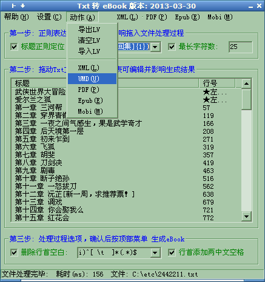

|
名称: Txt2eBook 功能: 将文本文件转换为各种格式的电子书:mobi(Kindel电子书),Epub(不包含字体),pdf(6寸),umd(手机电子书) 作者: 爱尔兰之狐(linpinger) 邮箱: linpinger@gmail.com 主页: http://linpinger.github.io?s=Atc_Txt2eBook 缘起: 基于txt2mobi程序，添加其他格式支持，扩大使用范围 原理: TXT -> UTF-8 HTML/NCX/OPF ->(kindlegen/mobigen) Mobi / Epub 下载:
本程序从AnsiTxt2Mobi升级而来
截图:  最简单的使用方法: 将文本文件拖动到列表框(窗口中最大的那个框)中, 按 顶部右边的 Epub / Mobi / PDF 菜单，然后就会生成Epub/mobi/pdf文件(有没有目录得看你的Txt的标题是不是 第xxx 章 这样的类型) 复杂的使用方法: 见: AnsiTxt2Mobi Linux下使用方法:使用wine可以运行本程序。注意使用选择文件按钮选择txt文件,umd,mobi文件都可以正常生成，若当前目录下存在 lantinghei.ttf，就可以生成PDF文件，epub文件因为两次调用zip.exe，可能由于权限问题，造成第一次生成的epub文件修改不了，导致主要文件添加失败，不过可以在.wine目录下的c驱动目录中找到临时目录，调用linux下的zip重新生成epub即可 可能的保存生成电子书的路径:
|